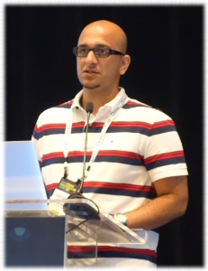

Stack and driver testing
In a combined storage and filesystem session at the 2017 Linux Storage, Filesystem, and Memory-Management Summit, Chaitanya Kulkarni led a discussion on testing for drivers for storage devices and other parts of the storage stack. He wanted to come up with a framework for testing drivers that is coupled tightly to the kernel. Right now, there are test suites that are scattered about; he wanted to get some ideas and feedback on a unified test framework.
Hannes Reinecke asked what kind of testing Kulkarni was targeting: functionality, performance, or something else. Kulkarni said that functional testing was the first step, but then moving toward a more complex set of test cases would be the goal.

One area that is not being verified is that the hardware and the kernel are both implementing cache flushing correctly, James Bottomley said. Making sure that the driver gets this right is one of the hardest things to test. But Jens Axboe said there are tools like his Flexible I/O Tester (fio) that can be used to record what has been written to a device; cutting the power and then verifying that all of the writes recorded have actually made it to the device can help. Chris Mason noted that it takes a large number of systems to do these kinds of tests, however.
Kulkarni wondered if there should be a way to test the entire block layer whenever a new commit is made to it. He asked: is there a way to do so and is that kind of testing needed? Bottomley channeled Dave Chinner and said that if that kind of testing is to be done it should be added to xfstests. The reason to do so is that the filesystem developers run it regularly, which provides a "pool of willing guinea pigs". In addition, attendees suggested a number of different tests and/or test suites that could be run as part of the unified testing.
But Mason suggested splitting things up a bit. While the filesystem developers do run xfstests "all the time", they don't have the hardware that Kulkarni (who works for Western Digital) is interested in. Using the device mapper to create emulators for hardware of interest that could be used by filesystem developers running xfstests would help with that. The developers will run those tests, so then it is just a matter of making sure that the emulator accurately reflects what the hardware does.
Ted Ts'o agreed, noting that shingled magnetic recording (SMR) devices is an area that needs testing, but that it is not easy for filesystem developers to test with them. If there were a device mapper emulator that provided the write pointer and other pieces of the SMR functionality, that would allow xfstests (and other tests) to be run. That would go a long way toward shaking out the filesystem-SMR interactions. "We can worry about edge cases later."
Testing with a device mapper emulator is fine for filesystems, but things like the block I/O scheduler need to be tested as well, one attendee said. Axboe said that those kinds of tests would exercise the multiqueue scheduler, but there are still tests needed on the block layer side. It could be something similar to xfstests that the block developers would run and would test the block and storage layer pieces of the stack. It could include tests for different device types like SMR as well as tests for kernel features like hotplug. If someone builds the framework, "tests will come", Axboe said.
In fact, he volunteered to help put the framework together. Josef Bacik also recommended adding it to xfstests, which Axboe said he wouldn't object to. The xfstests framework already has much of what would be needed, Bacik said, though Bottomley cautioned that changes would need to made to not require a filesystem, as xfstests does, for some portion of the test suite.
There is also the need to show what code paths are actually being tested, an audience member said, but another noted that there is gcov support in the kernel, which can be used to look at the test coverage.
An attendee was concerned that there is no hotplug testing that is being done, but Bacik said that some of the Btrfs tests use it. He is worried that there is no support for device-level testing in xfstests, so that would need to be added. Ts'o wants to ensure that whatever tests get created can be run by developers without needing access to special hardware, so device mapper emulators will need to be created.
Bottomley said that once xfstests is modified so that it doesn't require a filesystem to be mounted as part of the test, some subsystem-specific tests could be added for SCSI, NVMe, RDMA, and others. Bacik agreed; xfstests works well now for everything until you get to the block layer. The takeaway from the discussion is that block layer tests should be added to xfstests without requiring a filesystem then add the subsystem-specific tests, he said.
Mason added that some tests that don't require persistence should be part of the effort; things like device availability and enumeration. As new bugs arise, tests detecting those problems should be added as well, Axboe said. He doesn't want to make assumptions about what a test case will look like. There might be tests for specific kinds of hardware and so on. Whoever does the work will get to choose the form of the tests that can be run from the framework, he said.
Kulkarni wondered if some of the storage-subsystem-specific tests could be shared between the pieces like SCSI, NVMe, and others. Bottomley said that may be possible, but it is important to keep the focus on the features that the kernel cares about. Various hardware devices make guarantees and provide features that Linux does not use, so there is no value to the kernel community in testing those parts. A coverage map will help guide where more testing needs to be done. Time ran out on the session, but it appears there was strong agreement about the right path to take.
| Index entries for this article | |
|---|---|
| Kernel | Development tools/Testing |
| Conference | Storage, Filesystem, and Memory-Management Summit/2017 |